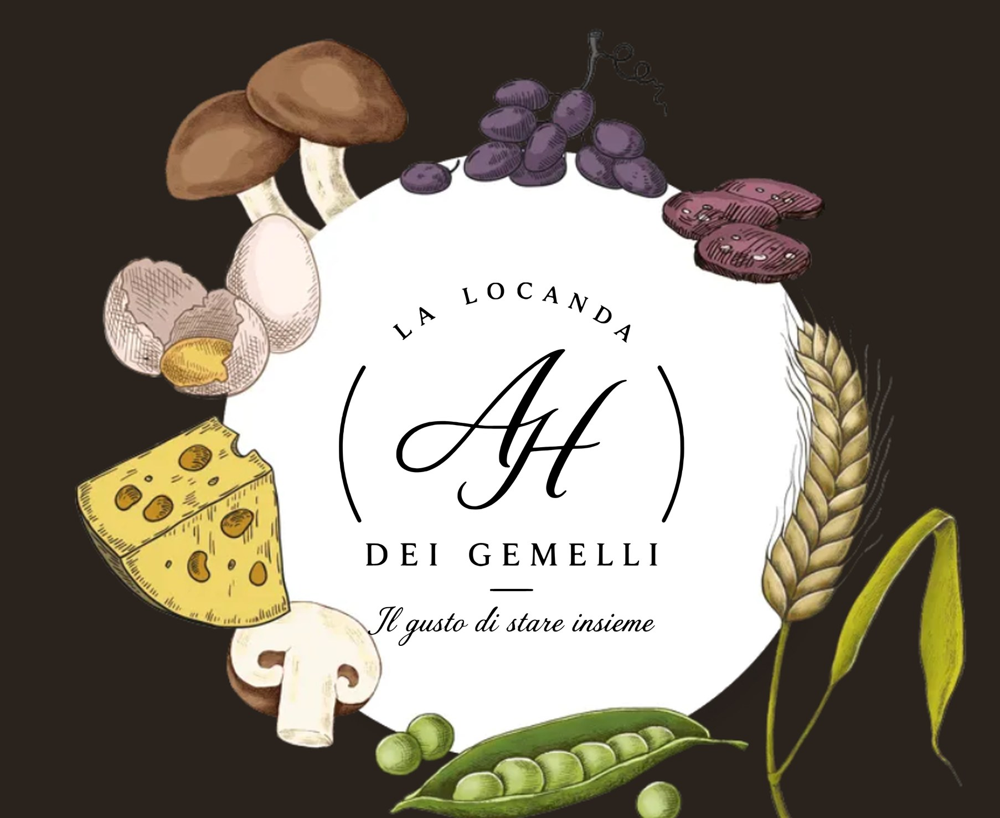
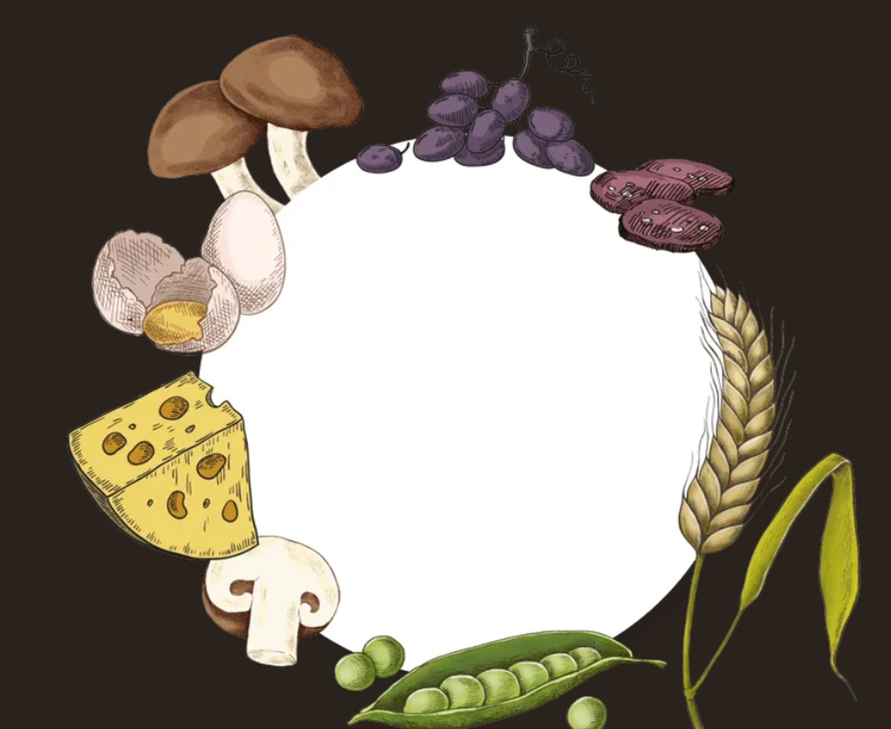

Korzenie
Przepisy, na których się wychowaliśmy, z tradycji Val di Sole i Trydentu. Od nich zaczyna się każde danie.
Restauracja i pizzeria
Nowoczesna osteria Val di Sole: składniki z naszych dolin, tradycyjne lokalne przepisy i pizza Barbary, naszej mistrzyni pizzaioli. Otwarte dla wszystkich, w porze obiadu i kolacji.
Nowoczesna osteria
Restauracji nie ocenia się po wystroju. Ocenia się ją po talerzu. Dlatego zaczynamy od surowca: górskich produktów sezonowych i identyfikowalnych, od producentów z naszych dolin. Potem traktujemy je z szacunkiem, według przepisów z Val di Sole i Trydentu, z dzisiejszą techniką.
Przepisy, na których się wychowaliśmy, z tradycji Val di Sole i Trydentu. Od nich zaczyna się każde danie.
Karta podąża za górami. Używamy tego, co doliny dają w danym momencie, w najlepszej formie.
Nowoczesna technika w służbie smaku, nie efektu. Nic zbędnego na talerzu.

Restauracja
Dania kuchni trydenckiej w nowoczesnej odsłonie i kilka propozycji międzynarodowych dla tych, którzy chcą zboczyć ze szlaku. Świeże składniki, uczciwe porcje, wyraziste smaki. Obiad, którego potrzebujesz między zjazdami, i kolacja, którą zapamiętasz na koniec wakacji.
Obiad 12:00 – 14:30 · Kolacja 17:30 – 22:00

Pizzeria
Każda pizza wychodzi spod rąk Barbary, naszej mistrzyni pizzaioli. Starannie przygotowane ciasto, dobre sezonowe składniki, przemyślane połączenia. Znajdziesz klasyki, które kochasz, i kompozycje stworzone w naszej kuchni.
Codziennie wieczorem 17:30 – 22:30, oprócz wtorków
Nie tylko kolacja

Nasza kuchnia i nasza pizza na wynos, na kolację w apartamencie lub w domu. Ta sama troska, ten sam smak.

Od czerwca do października podajemy w ogrodzie: letnie wieczory, urodziny, kolacje w gronie bliskich i przyjęcia.

Sery, wędliny, jabłka, mąka i warzywa z Trydentu, wybrane od producentów z naszych dolin. Wiemy, skąd pochodzi każdy składnik. I to czuć na talerzu.
Doliny dają składniki. My dajemy rzemiosło.
Rezerwacje
Napisz do nas na WhatsApp lub wypełnij formularz poniżej: potwierdzimy stolik najszybciej, jak to możliwe. We wtorki jesteśmy nieczynni.
WhatsApp: +39 328 983 9761
Via Campiglio 59, 38025 Dimaro Folgarida (TN), Włochy Wyznacz trasę Otwórz w Google MapsOtwarte od grudnia do kwietnia i od czerwca do października
Zarezerwuj stolik
Podaj dzień, godzinę i liczbę osób. Rezerwacja jest potwierdzona, gdy odpowiemy telefonicznie, przez WhatsApp lub e-mailem.
Dziękujemy! Otrzymaliśmy Twoje zapytanie. Odpowiemy najszybciej, jak to możliwe.